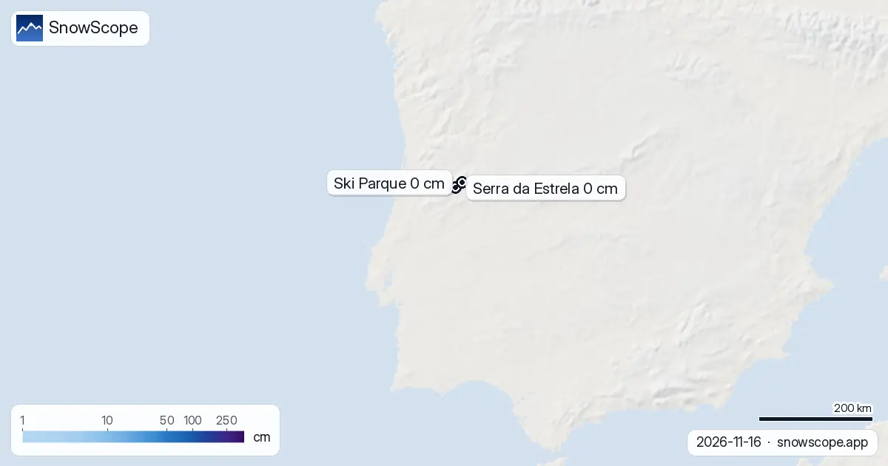

Neve em Portugal, 16 de novembro de 2026: a neve ainda se faz esperar
Quase não há neve em Portugal hoje: cerca de 0 km² de terreno branco.
Veja a previsão de neve para Serra da Estrela na app SnowScopeEspessura da neve, alertas e mapa 3D, grátis.
O manto de neve hoje
A área é quase a mesma de ontem. Numa semana a área quase não mudou face aos 0 km².
| Estância | Espessura da neve | Neve nova, 72 h | Próximos dias | Topo |
|---|---|---|---|---|
| Serra da Estrela | 0 cm | 0 cm | 2 cm | 1.986 m |
| Ski Parque | 0 cm | 0 cm | 0 cm | 653 m |
Os próximos dias
Os primeiros flocos são esperados por volta de: segunda-feira, 23 de novembro.
Mais adiante, nos dias 8–14, as encostas com mais neve podem somar até 13 cm.
Onde caiu neve nova
Nos últimos três dias quase não nevou: o máximo é de 0 cm.
As melhores estâncias agora
Nenhuma das estâncias que acompanhamos (2) tem ainda neve nas pistas.
Dicas para esquiadores
- No início da época a neve é fina sobre as pedras: fique nas pistas preparadas.
About these numbers
Resort snow depths are the deepest snow on the resort's upper slopes from the SnowScope snow model (about 1 km, run of 16 de novembro); they are estimates for an area, not a measurement at one point. Station values are measurements on the date shown. Forecasts can change. Always read the official avalanche bulletin before going off-piste.
Cite this report
For research, teaching or the press: the numbers and charts are free to reuse under CC BY 4.0 with this citation.
SnowScope (2026), Neve em Portugal, 16 de novembro de 2026: a neve ainda se faz esperar, https://snowscope.app/blog/pt/2026/11/portugal-snow-report-16-november-2026.html, accessed 2026-11-16
SnowScope (Atlas Labs). (2026, November 16). Neve em Portugal, 16 de novembro de 2026: a neve ainda se faz esperar. SnowScope snow reports. https://snowscope.app/blog/pt/2026/11/portugal-snow-report-16-november-2026.html
BibTeX
@misc{snowscope2026portugalsnowreport16nove,
author = {{SnowScope (Atlas Labs)}},
title = {Neve em Portugal, 16 de novembro de 2026: a neve ainda se faz esperar},
year = {2026},
month = nov,
howpublished = {\url{https://snowscope.app/blog/pt/2026/11/portugal-snow-report-16-november-2026.html}},
note = {Published 2026-11-16 20:42 UTC; accessed 2026-11-16}
}· CC BY 4.0 · Methods, data and tools →
Serra da Estrela: snow and temperature by height, this winter vs last (tools) →
Follow Serra da Estrela
Grátis: uma mensagem quando vem neve nova e a previsão todas as manhãs.